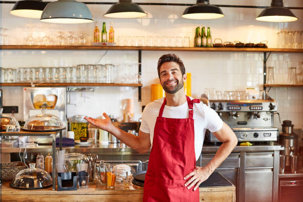
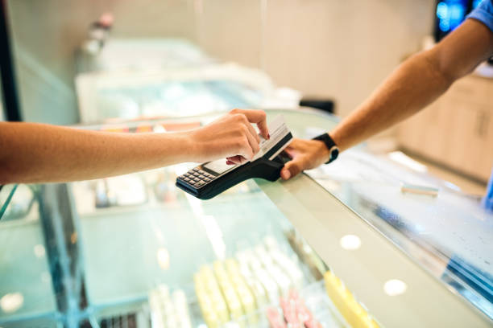

*How may we help you become a SJ.franchisee?
Explore these pages to learn more about franchising a Shrek Juice corporation in the Viet Nam.
*Your Future made at Shrek Juice

*Your path to become a
Shrek Juice franchisee :
The following indicative costs and estimates are subject to change without notice. Actual cost will
only determined when a specific store is offered to a potential franchisee who is qualified to buy.
We require that the buyer pay a minium of 25% cash as a down payment toward the purchase of a restaurant.
The remaining balance of the purchase price may be financed fpr period of no more than seven years. While
Shrek Juice does not offer financing, Shrek Juice franchisees enjoy the benefits of our established relationships
with many nationnal lending institutions. We believe our Franchisees enjoy the lowes lending rates in the industry.
Terms of Franchise : *A traditional term is generally 20 years (except where described in the
Franchise Disclosure Document)
Ongoing Fees : *A monthly service/royalty fee based on a percentage of the restaurant's gross sales
(Currently 4%)
*Monthly rent is typically a fixed base rent and a percentage of the restaurant's gross sales.
For properties where we lease the land and/or building, we will pass thru rent.
*Monthly advertising and promotion contributions of not less than 4% of gross sales
*All outgoing fees including technology,learning,sofware,utilities...
Estimated initial costs for a
new traditonal Shrek Juice:
*initial Franchise fee $45,000
*Opening inventory $20,000-$35,000
*Miscellaneous Opening Expenses $45,000-$55,000
*Additional funds-3months $250,000-$355,000
*Signs,seating,equipment and decor $900,000-$1,500,000
Becoming a Shrek Juice Franchisee
Our selection process has 7 stages
Stage 1: Application
Stage 2: Phone interview
Stage 3: Background/Credit Check
Stage 4: Panel interview
Stage 5: Financial / Asses Verification
Stage 6: Review of legal documents
Stage 7: Enter training program
After successful completion of the training program Shrek Juice, in its sole and absolute
discretion, will grant a candidate a Shrek Juice franchise opportunity. There may be a
time dalay between completion of training and the offer of a franchise depending on availability
of a suitable restaurant. Your flexibility for the relocation open the door for more opportunity.
At any time during the course of our selection process, including the applicant training program,
Shrek Juice has the right to terminate your participation in the process in its sole discretion
and without being required to provide you with any reasons.
of course, you are also able to terminate your participation at any time.If you participate
in the above selection process, you will incur the following costs:
*Travel to Shrek Juice headquarters for a panel interview
*Travel during the training program
*Asset verification with a CPA
There is also the cost of your time as you will need to bear in mind that shrek Juice will not pay
you for the time you spend participating in the selection and training process.

Why Shrek Juice?
For community-minded individuals willing to put in the work and inspired to delve into every aspect
of the business, Shrek Juice has the established framework for success. Our resources are unmatched, and
the Shrek Juice franchise model is the most best in the world.
Acquiring A Franchise
If you're ready to apply superior tangible and intangible skills full-time to your business, this is your
opportunity to realize substantial rewards. Bring your minimum investment of $500,000 of non-borrowed personal
funds, keen acumen in creating business plans, ability to run all operational aspects of your business, and willingess
to relocate to your new Shrek Juice franchise.
If you interested about franchising pleases click Contact Us in navigation bar for more info or:Tel: